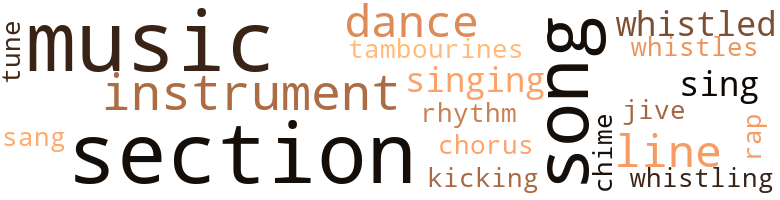
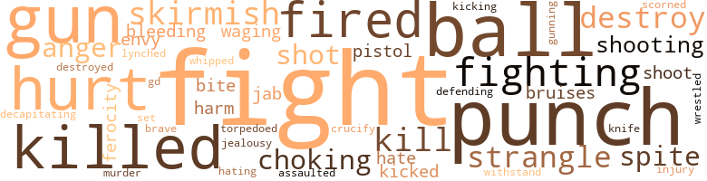
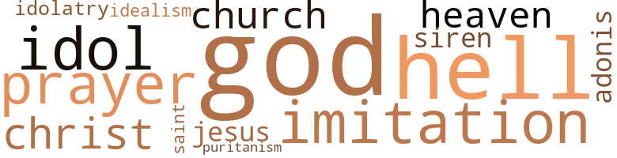

Hollow and the Human, (The), by Rhodes, Hari (1976)
55 music-related terms matched in this text.
Most frequent terms in this topic: music (9); section (9); song (6); instrument (5); line (4)
chime.n.01
Definition: a percussion instrument consisting of a set of tuned bells that are struck with a hammer; used as an orchestral instrument
| word | sentence |
|---|---|
| chime | Fireworks go off , bells ring , chimes chime , whistles toot , bands start playing . |
chorus.n.01
Definition: any utterance produced simultaneously by a group
| word | sentence |
|---|---|
| chorus | When I pressed the button I could hear a chorus of chimes going off inside . |
dance.n.01
Definition: an artistic form of nonverbal communication
| word | sentence |
|---|---|
| dance | They went right into some dance thing , and it looked fantastic . |
| dance | For all of three fast dance numbers I watched her , and not once did she dance with any of a handful of Black guys there . |
| dance | Why did n't you say hello or something - or ask me for a dance ? " |
dance.v.03
Definition: skip, leap, or move up and down or sideways
| word | sentence |
|---|---|
| dance | For all of three fast dance numbers I watched her , and not once did she dance with any of a handful of Black guys there . |
jive.v.01
Definition: dance to jive music; dance the jive
| word | sentence |
|---|---|
| jive | The tube and the film screen are filled daily with mediocre talents who consistently jive their way to and from the bank , while the truly talented ones , the truly gifted ones , far too often live , do piecemeal work , and die in obscurity . |
kick.v.04
Definition: kick a leg up
| word | sentence |
|---|---|
| kicking | Finally I decided that she was heavy enough to handle really getting down , so I eased it in to that first ridge behind the head and let it sit there a moment ; She was slapping on my back , kicking me in the butt with her heels , trying to get me to commit it all , but that was n't where it was for the moment . |
music.n.01
Definition: an artistic form of auditory communication incorporating instrumental or vocal tones in a structured and continuous manner
| word | sentence |
|---|---|
| music | She spoke of her earlier training in music and dancing in New York . |
| music | If all else failed , nine times out of ten we could always be counted on for some decent music . |
| music | Then , for some reason , probably a shift in the music , I began watching that small-sized bass player . |
| music | As quietly and smoothly as Mildred had brought me a drink and a distant kiss , she moved away to gather more material for her column , leaving me to munch on a surprisingly tasty salad and pat my feet some more to that good music . |
| music | Somewhere between that gittin ' down music , the two double Scotches Mildred had dropped off and the anticipation of the night to follow , I shoveled food like it was going out of style . |
| music | " We were beginning to think we 'd been buried beneath a pile of politics , crime , music , and sex . " |
| music | To the left sat the new music center , spraying foun - tains and all the glass , concrete , and cement that went with it . |
| music | Every once in a while when I 'm alone and the music is playing tastily on the radio , I 'll get in front of the mirror and go through what to my eyes looks like some pretty sorry moves . |
| music | Somewhere along the line I must have gotten so carried away with the music and the people and my rambling thoughts that I missed the pressed waitress bringing round after round of drinks to jour table . |
musical_instrument.n.01
Definition: any of various devices or contrivances that can be used to produce musical tones or sounds
| word | sentence |
|---|---|
| instrument | A bass player walked up onto the stage carrying an instrument that was at least a half a foot larger than him . |
| instrument | This cat did n't just play his instrument - he made love to it . |
| instrument | That was n't just an instrument to that man , it was a passion . |
| instrument | I do n't know whatever gave me the idea that instrument was too much for the little fella . |
| instrument | Halfway down my back she decided to reach around and take a reading on the periscope peeking up out of the soapy water , that instrument thumped in her hand , that nice , sweet , unassuming newspaper lady did one of the fastest strip jobs I have ever seen . |
rap.n.05
Definition: genre of African-American music of the 1980s and 1990s in which rhyming lyrics are chanted to a musical accompaniment; several forms of rap have emerged
| word | sentence |
|---|---|
| rap | Now we probably had a murder rap hanging over our heads . |
rhythm.n.04
Definition: the arrangement of spoken words alternating stressed and unstressed elements
| word | sentence |
|---|---|
| rhythm | I can hear rhythm and can pat a mean foot but when it comes to getting out on a floor and moving with the kind of coordination I see some people moving with , forget it . |
section.n.01
Definition: a self-contained part of a larger composition (written or musical)
| word | sentence |
|---|---|
| section | I played the tape again , this time making notes , unsteady as they were , trying to line up on an approach to her section of the feature . |
| section | Next to it was his sport jacket section and next to that his slack and tie section , next to that his hanging shirt section , followed by his shoe sec - tion , and onto the hat section , and last , the top coat section . |
| section | Next to it was his sport jacket section and next to that his slack and tie section , next to that his hanging shirt section , followed by his shoe sec - tion , and onto the hat section , and last , the top coat section . |
| section | Next to it was his sport jacket section and next to that his slack and tie section , next to that his hanging shirt section , followed by his shoe sec - tion , and onto the hat section , and last , the top coat section . |
| section | Next to it was his sport jacket section and next to that his slack and tie section , next to that his hanging shirt section , followed by his shoe sec - tion , and onto the hat section , and last , the top coat section . |
| section | While I talked I glanced around and found we were ap - proaching a section of the city I had n't seen before . |
| section | We were still going through what appeared to be a Black section of town . |
| section | The shock of going from the glaring lights of that outer section into the much darker main room caught me a little off guard . |
| section | Once she saw that he had stopped and we turned the next corner , she quickly got off of Sunset , darting smoothly through a very posh section of town . |
sing.v.02
Definition: produce tones with the voice
| word | sentence |
|---|---|
| sang | The only thing wrong was every time I tried to turn my head to look from side to side , that rash on my neck sang me a song . |
| sing | " If that 's a promise , I 'll sing from the rooftops , " she laughed , blinking back that rising flood . |
| sing | " All of a sudden a man walked into a club one night out here in the Valley and heard me sing . |
singing.n.01
Definition: the act of singing vocal music
| word | sentence |
|---|---|
| singing | It was easy to see why , as they swept on stage and began singing , they had become an almost overnight sensa - tion . |
| singing | When I opened the door I started singing in my best controlled shower voice , " It had to be you . " |
song.n.01
Definition: a short musical composition with words
| word | sentence |
|---|---|
| songs | She spoke of her published songs which were sold for peanuts because she was hungry . |
| song | For example : no popular song has ever been written about it . |
| song | The only thing wrong was every time I tried to turn my head to look from side to side , that rash on my neck sang me a song . |
| song | I got tired of that song after just a few notes and settled for the people directly in front of me . |
| song | The surefire test would be the day somebody wrote a popular song about it . |
| song | " Hu-huh I 've heard that song before . |
| song | He greets me with a song and an open fly - tsk , tsk , tsk . . . " I looked down and saw she was right . |
tambourine.n.01
Definition: a shallow drum with a single drumhead and with metallic disks in the sides
| word | sentence |
|---|---|
| tambourines | We passed a church where we could hear the tambourines and see ladies at the door dressed in white flowing garments that were designed to resemble fashion from old Egypt . |
tune.n.01
Definition: a succession of notes forming a distinctive sequence
| word | sentence |
|---|---|
| tune | The band finished the first tune and got a modest response from the boogeys in the audience . |
| line | It was not his line of endeavor , and he had no intention of jeopardizing the welfare of his family and his many loyal employees just to print cheap sensationalism . |
| line | He stung 'em with that straight line , and they swooned . |
| line | They walk a very thin line , and they know it . |
| line | Yet all that person 's life , he had played that middle line , vying almost desperately for white attention . |
whistle.n.01
Definition: the sound made by something moving rapidly or by steam coming out of a small aperture
| word | sentence |
|---|---|
| whistles | Fireworks go off , bells ring , chimes chime , whistles toot , bands start playing . |
whistle.v.01
Definition: make whistling sounds
| word | sentence |
|---|---|
| whistled | I think I whistled or something because he laughed with his deep voice and went right on talking about his running feud with his housekeeper . |
| whistled | The punch he threw actually whistled . |
| whistling | I walked out , whistling softly . |
96 violence-related terms matched in this text.
Most frequent terms in this topic: fight (13); punch (7); ball (4); killed (4); hurt (4)
anger.n.01
Definition: a strong emotion; a feeling that is oriented toward some real or supposed grievance
| word | sentence |
|---|---|
| anger | The words were hard for a woman , but there was no anger on her face . |
| anger | " It 's not even a matter of handouts , Billy , " Al came right back , an edge of anger creeping in , " it 's a matter of right and wrong and justice . " |
assail.v.01
Definition: attack someone physically or emotionally
| word | sentence |
|---|---|
| assaulted | She told me that she had just heard over the car radio that Thelma had been admitted to UCLA Medical Center after having been assaulted . |
bleeding.n.01
Definition: the flow of blood from a ruptured blood vessel
| word | sentence |
|---|---|
| bleeding | One I knew was going through a nervous breakdown , and the other had come up with a bleeding ulcer . |
blister.v.02
Definition: subject to harsh criticism
| word | sentence |
|---|---|
| whipped | She whipped that Mercedes onto Laurel and headed down toward Sunset . |
bruise.n.01
Definition: an injury that doesn't break the skin but results in some discoloration
| word | sentence |
|---|---|
| bruises | No amount of makeup could cover those bruises . |
brush.n.06
Definition: a minor short-term fight
| word | sentence |
|---|---|
| skirmish | I was n't about to get in on that little skirmish . |
| skirmish | He returned it and it appeared , for the moment , the skirmish was over . |
contemn.v.01
Definition: look down on with disdain
| word | sentence |
|---|---|
| scorned | In most cases , though , it was more to be pitied than scorned , since the people with the fever really do n't know much of anything about themselves or what they are really about . |
crucify.v.01
Definition: kill by nailing onto a cross
| word | sentence |
|---|---|
| crucify | " You wo n't , " I assured him , " I did n't come out here to crucify anybody - just to write an article . " |
decapitate.v.01
Definition: cut the head of
| word | sentence |
|---|---|
| decapitating | One of them , I think it was Gaines , was kind enough to help keep me from decapitating myself . |
defy.v.01
Definition: resist or confront with resistance
| word | sentence |
|---|---|
| withstand | The game did n't allow him to be relaxed , nor to be but a small part of himself , because he still was n't big enough to withstand being wiped out if he should decide not to be a good boy . |
destroy.v.04
Definition: put (an animal) to death
| word | sentence |
|---|---|
| destroy | Oh well , I told myself , after hanging up , one evening of being strapped in should n't destroy me . |
| destroyed | It just came , ate , and destroyed . |
| destroy | " Yes - A , if the whiteys do n't destroy it first , and B , if the niggers do n't all kill each other . " |
engage.v.07
Definition: carry on (wars, battles, or campaigns)
| word | sentence |
|---|---|
| waging | In other words , he was waging his own war with that thing . |
envy.n.01
Definition: a feeling of grudging admiration and desire to have something that is possessed by another
| word | sentence |
|---|---|
| envy | I began to feel myself on dangerous ground because I found fragments of envy creeping into my soul . |
ferocity.n.01
Definition: the property of being wild or turbulent
| word | sentence |
|---|---|
| ferocity | I could hear the chill in my voice , and he must have heard it , too , because he walked away and they went right back to that same ferocity they were into when I arrived . |
fight.n.02
Definition: the act of fighting; any contest or struggle
| word | sentence |
|---|---|
| Fighting | Fighting an impulse to tear it off , I slipped it over my head , dropped it on the floor , and reached for her . |
fight.n.05
Definition: a boxing or wrestling match
| word | sentence |
|---|---|
| fight | A part of me was going along with the nonsense only because it was offbeat , to say the least , and in many ways outlandish , but another part of me was asking myself if this guy was for real and , if there really was a fight going on over there , was there a chance Archie might lose ? |
| fight | It was about the time she was going off for the first time , and the strength she brought to bear in her midsection made me hold my breath for fear of having my joint torn from its roots and hoping to God I never got into a fist fight with the woman . |
| fight | It had been a while since I had had a chance to see if I could still handle myself in a fight . |
fight.v.02
Definition: fight against or resist strongly
| word | sentence |
|---|---|
| fight | It was his battle , and I was determined to let him fight it . |
| fight | He or she may walk away , but will seldom fight . |
| fight | Others had managed by accepting , while others had hardened to forget the drama school stuff and fight the battle on local terms . |
| fight | I did n't fight it , though . |
| fight | There are ways to stand your own ground and fight back , the other guy said . |
| fight | The first guy said he did n't think most people had it in them to fight back in any way . |
| fighting | I heard him take another deep breath , as though fighting to get himself back together . |
| defending | They laugh , they cry , yet are fully capable of defending themselves if they have to . |
| fighting | " Because you 're fighting a losing battle , Al . |
| fight | " Do n't fight it , man , " she said , laughing , " open the ding - dong thing . " |
| fight | I did , however , see people going through the motions of talking and gesturing , and I wondered why they chose to fight that machine . |
| fight | She tried to fight back , " But promise you wo n't spill this one . " |
| fight | Did they improvise , or did they become loose enough to forget about it and let the salt air fight their battle ? |
gag.v.06
Definition: cause to retch or choke
| word | sentence |
|---|---|
| choking | Even though she suppressed the scream , almost choking herself in the process , since that was how far along it was , she still did n't relax . |
| choking | I plopped down into my chair and swallowed hard three or four times to keep from choking on my own nerves . |
gun.n.01
Definition: a weapon that discharges a missile at high velocity (especially from a metal tube or barrel)
| word | sentence |
|---|---|
| gun | Talk about the fastest gun in the West - baby , this was the shakenest hand in the West . |
| guns | The first thing I noticed as we approached was that some people or , rather , I should say some things were running across a piece of open pavement , making strange noises and firing guns . |
| GUNS | Here we go with the GUNS again . |
| guns | Some day I would really investigate this insidious love affair with guns Americans seem to have . |
| gun | Every gun fired and karate kick is one for them . |
gun.v.01
Definition: shoot with a gun
| word | sentence |
|---|---|
| gunning | She pulled another one out of the bag by just gunning the car , with the dude dangling on the hood , snarling at us through the windshield . |
hate.v.01
Definition: dislike intensely; feel antipathy or aversion towards
| word | sentence |
|---|---|
| hate | I hate to admit it , but he was right . |
| hating | How many were cheering him , how many hating , and how many did n't give a damn one way or the other ? |
injury.n.01
Definition: any physical damage to the body caused by violence or accident or fracture etc.
| word | sentence |
|---|---|
| harm | With my mother no more than two years passed away and the old man retired from a lifetime of Pullman porter work with the railroad , I did n't see any harm in cutting down on my expenses by accepting Dad 's invitation to resume residence in my old room and give him some much-needed company at the same time . |
| injury | I concluded that I had been worried about her well-being and extent of injury because in some peculiar way I felt responsible , or at least partly . |
| hurt | The only reason she did n't throw me out and do away with any possible danger to yield to temptation to be conquered , or hurt , was that I was there as a vanity prod . |
jab.n.02
Definition: a quick short straight punch
| word | sentence |
|---|---|
| jab | Now she had managed to get us far enough into the foyer to where she could jab some tickets at a young blonde thing , who was n't sure whether she should run or not when she saw Mildred bearing down on her , dragging this tuxedoed form behind her . |
jealousy.n.01
Definition: a feeling of jealous envy (especially of a rival)
| word | sentence |
|---|---|
| jealousy | I felt a small portion of jealousy at the fact that they were going to and from the kitchen and I could n't . |
kick.v.04
Definition: kick a leg up
| word | sentence |
|---|---|
| kicking | Finally I decided that she was heavy enough to handle really getting down , so I eased it in to that first ridge behind the head and let it sit there a moment ; She was slapping on my back , kicking me in the butt with her heels , trying to get me to commit it all , but that was n't where it was for the moment . |
kick_back.v.02
Definition: spring back, as from a forceful thrust
| word | sentence |
|---|---|
| kicked | I was determined to hang on to this guy until he kicked me out . |
kill.v.10
Definition: cause the death of, without intention
| word | sentence |
|---|---|
| killed | Anyway , I picked up some news one night that led me to believe some certain members of color of the county sheriff 's department were trying to muscle in on a prostitution ring and had killed four dudes to emphasize their intentions . |
| killed | One was killed , the other nearly killed by a crazy woman in Harlem . " |
| killed | One was killed , the other nearly killed by a crazy woman in Harlem . " |
| killed | " But he was later killed by a white . " |
| kill | " Yes - A , if the whiteys do n't destroy it first , and B , if the niggers do n't all kill each other . " |
killing.n.02
Definition: the act of terminating a life
| word | sentence |
|---|---|
| kill | " Well , I do n't know , " he said , standing back , putting his weight on the pool cue much like a great white hunter posing over his kill . |
knife.n.02
Definition: a weapon with a handle and blade with a sharp point
| word | sentence |
|---|---|
| knife | Especially parts like being wasted by a disc jockey who should have been out chopping down redwoods with a kitchen knife . |
lynch.v.01
Definition: kill without legal sanction
| word | sentence |
|---|---|
| lynched | And if we got caught , she had to holler rape to save her own ass and they lynched the brother . |
malice.n.01
Definition: feeling a need to see others suffer
| word | sentence |
|---|---|
| spite | It was what followed that caused the grin I could n't drop the next morning in spite of the pain . |
| spite | It 's very hard sometimes to hold to what you know is right , in spite of the crap flying around you . |
murder.n.01
Definition: unlawful premeditated killing of a human being by a human being
| word | sentence |
|---|---|
| murder | Now we probably had a murder rap hanging over our heads . |
musket_ball.n.01
Definition: a solid projectile that is shot by a musket
| word | sentence |
|---|---|
| balls | I grinned again and nodded , watching with growing in - terest as he ran first one , then two , then three balls in succession . |
| balls | Somewhere between the time he broke the balls and made his first three shots , I remembered something I had read on Fry , along with photos at a recent black entertainment awards cere - mony . |
| ball | I guess he thought I was n't going to answer him because he had gone on to make his next shot , and when I answered he looked up at me and knocked the cue ball all the way off the table . |
| ball | " That 's all , huh ? " he said , picking up the ball and placing it on the table for me to spot . |
| ball | The noise was coming from the back side of the garage , so , keeping an eye out for dogs , I walked along a concrete pathway between the house and the garage and before I got to the end , I saw flashes of guys running and passing the ball and heard it bouncing off the iron when a shot was missed . |
| ball | I heard the three of them out on the ball court , taking random shots until Brooks could rejoin them and get back to a two-team balanced game . |
open_fire.v.01
Definition: start firing a weapon
| word | sentence |
|---|---|
| fired | Vinton fired enough of a salvo as an actor and as an Adonis in that film to catch on in a way no black actor had caught on since . |
| fired | Every gun fired and karate kick is one for them . |
| fired | He snapped his thick fingers , and it sounded like a twenty-two being fired . |
pain.v.02
Definition: cause emotional anguish or make miserable
| word | sentence |
|---|---|
| hurt | Though the jaw was somewhat relieved , it still hurt . |
| hurt | She was a cross between Billie Holliday and Dorothy Dandridge in looks , and the little 280 SL Mercedes she was driving did n't hurt her appeal either . |
| hurt | It actually started to hurt . |
pistol.n.01
Definition: a firearm that is held and fired with one hand
| word | sentence |
|---|---|
| pistol | It was like talking to a pistol with a hair trigger . |
punch.n.01
Definition: (boxing) a blow with the fist
| word | sentence |
|---|---|
| punch | What appears to be a punch winds up being someone reaching out to put their arm around you . |
| punch | The punch he threw actually whistled . |
| punch | I 'm still confused about how a punch on the jaw can affect the eyes that way , unless it just shook everything above the neck loose . |
| punch | Louise had fixed a bowl of some kind of punch which she passed around . |
| punch | Louise had no sooner passed around the last cup of punch when the man in the small group talking to Billy and the brother stood up and cleared his throat . |
| punch | Every punch is a punch for them . |
| punch | Every punch is a punch for them . |
shoot.v.02
Definition: kill by firing a missile
| word | sentence |
|---|---|
| shoot | " You shoot pool ? " he asked as we walked into the play - room . |
| shot | A pain shot through me like a runaway bolt of lightning going from head to toe in a split second . |
| shot | She shot me a look which I 'm sure was designed to melt , but I do n't play that particular game with ladies so I just waited . |
shooting.n.02
Definition: killing someone by gunfire
| word | sentence |
|---|---|
| shooting | Mildred told me this new pueblo was called Century City , and we were on the way to pay a quick visit to a film set shooting there in the middle of all that concrete , steel , and glass . |
| Shooting | Shooting for universality was one thing . |
sic.v.01
Definition: urge to attack someone
| word | sentence |
|---|---|
| set | The fact that twice in our history now , since the movement started , two leaders were set upon by blacks is n't funny . |
soman.n.01
Definition: a nerve agent easily absorbed into the body; a lethal cholinesterase inhibitor that is highly toxic when inhaled
| word | sentence |
|---|---|
| GD | I could only say something very unoriginal like , it 's about GD time . |
sting.n.03
Definition: a painful wound caused by the thrust of an insect's stinger into skin
| word | sentence |
|---|---|
| bite | I beat it back to the hotel as fast as possible , taking a quick time-out to grab a bite to eat at a local chain restaurant , and rent a tux . |
strangle.v.01
Definition: kill by squeezing the throat of so as to cut off the air
| word | sentence |
|---|---|
| strangle | What was painful was no free money at the end of the month , which made me move back home , and the other tributaries of poverty that strangle a number of people annually . |
| strangle | The city 's famous disc jockey , Daddy Cool , had been arrested at the Medical Center when , after being admitted to Thelma 's room , was caught by the nurse in attendance trying to strangle the lovely Miss Legg . |
torpedo.v.01
Definition: attack or hit with torpedoes
| word | sentence |
|---|---|
| torpedoed | Do people who are ship - wrecked or who have been torpedoed and who float around in a lifeboat for long periods of time ever get sexually aroused , and , if so , what do they do about it , since the boat is occupied by male and female ? |
weather.v.01
Definition: face and withstand with courage
| word | sentence |
|---|---|
| brave | Things I and others like me had thought and expounded to each other for years were now being said by brave young and a few older people on national TV . |
wrestle.v.01
Definition: combat to overcome an opposing tendency or force
| word | sentence |
|---|---|
| wrestled | He went to a cupboard , took out a mason jar , wrestled off the cap of a bottle of booze , poured a stiff drink , and downed it . |
44 religion-related terms matched in this text.
Most frequent terms in this topic: God (10); hell (8); idol (3); gods (2); church (2)
adonis.n.03
Definition: (Greek mythology) a handsome youth loved by both Aphrodite and Persephone
| word | sentence |
|---|---|
| Adonis | Vinton fired enough of a salvo as an actor and as an Adonis in that film to catch on in a way no black actor had caught on since . |
church.n.02
Definition: a place for public (especially Christian) worship
| word | sentence |
|---|---|
| church | She tossed my six-foot , nearly two-hundred-pound frame around that bed like I was one of those church hand fans . |
| church | We passed a church where we could hear the tambourines and see ladies at the door dressed in white flowing garments that were designed to resemble fashion from old Egypt . |
eden.n.01
Definition: any place of complete bliss and delight and peace
| word | sentence |
|---|---|
| heaven | The morning after a night like I had is both heaven and hell , rolling around in one ordinary size skull . |
| heaven | Well , by the time Billy and Louise got through messing around in his kitchen and we sat down to eat , I was in eighth heaven . |
god.n.03
Definition: a man of such superior qualities that he seems like a deity to other people
| word | sentence |
|---|---|
| God | It was about the time she was going off for the first time , and the strength she brought to bear in her midsection made me hold my breath for fear of having my joint torn from its roots and hoping to God I never got into a fist fight with the woman . |
| god | I had no intention of paying homage to him or to any other earthly god . |
| God | Thank God Lady Stone Face was persuasive enough to get Mighty Joe Young to listen and let my lapels go . |
| god | I step - ped closed to the wall nearest me and began devouring the array of beautiful women who had draped themselves over , around , and under this former god . |
| God | I took another sip of my vodka and prayed to God that I would never let anything anybody threw at me break me to this point . |
| God | I thanked God it was dark enough so he could n't see my face clearly , because I was having my hands full keeping from cracking up . |
| gods | Do people really want to be chummy with their gods ? |
| gods | Is it better to have the achievement of the gods something to shoot for from a distance , thus maintaining the mystique to which people seem forever drawn ? |
| God | This was the stuff I wished to God I could write my story about , but nobody was ready . |
| God | I do n't feel obliged to anyone or anything , except my God and my talents . |
| God | I said yes quicker than God could get the news . |
| God | I knew damned well that if I drank anything alcoholic with this chick , I would jump her sooner or later just as sure as God made green apples . |
| God | " Then she 'll hafta keep lookin ' and hope to God she does n't buckle too much because she picked wrong the first time . " |
| God | Thank God it was parked in the carport , which was on the side of the house . |
hell.n.01
Definition: any place of pain and turmoil
| word | sentence |
|---|---|
| hell | It sure as hell was n't mine . |
| hell | If I did n't get what I needed now , to hell with it . |
| hell | If so , fine , because there sure as hell was n't going to be a second time with this jaybird . |
| hell | What personal hell was this very attractive woman living in that turned her inner beauty so ugly ? |
| hell | Where the hell was he putting it ? |
| hell | Vinton laughed , took another drink , this time , snapping his fingers , saying he did n't know what the hell was wrong with him that he should forget his manners like that . |
| hell | I told myself to hell with it and grabbed the phone . |
| hell | This sure as hell was n't the time to start looking for it . |
idealism.n.01
Definition: (philosophy) the philosophical theory that ideas are the only reality
| word | sentence |
|---|---|
| idealism | " That 's good idealism , Billy , " Al said , sniffing slightly , " but not very realistic . |
idol.n.01
Definition: a material effigy that is worshipped
| word | sentence |
|---|---|
| idol | Once more I pushed my personal thing aside to keep my mind on Archie Fry the man and new black movie idol . |
| idol | Not with this idol of millions in the other room calling somebody all kinds of outlandish names over a phone - and me just a plain ole day-by-day journalist trying to get along in the world . |
idol.n.02
Definition: someone who is adored blindly and excessively
| word | sentence |
|---|---|
| idol | I looked him over and could n't believe that this tall , skinny ragman was once called the first black matinee idol . |
idolatry.n.02
Definition: the worship of idols; the worship of images that are not God
| word | sentence |
|---|---|
| idolatry | Watching him , I could n't help think what a shame it was that people like this , with his kind of influence and idolatry created power , do n't work closer with grass-roots people . |
imitation.n.01
Definition: the doctrine that representations of nature or human behavior should be accurate imitations
| word | sentence |
|---|---|
| imitation | It somehow made this function seem a little less like a thrown-together imitation of the industry 's annual awards . |
| imitation | No matter how long this imitation function took , she had to stay . |
| imitations | " Sure , if you call imitations of the established progress . |
jesus.n.01
Definition: a teacher and prophet born in Bethlehem and active in Nazareth; his life and sermons form the basis for Christianity (circa 4 BC - AD 29)
| word | sentence |
|---|---|
| Jesus | " When you live the way I live and have what I have , people talk about you - it 's nothing new - they talked about Jesus Christ , did n't they ? |
messiah.n.01
Definition: any expected deliverer
| word | sentence |
|---|---|
| Christ | " When you live the way I live and have what I have , people talk about you - it 's nothing new - they talked about Jesus Christ , did n't they ? |
| Christ | " Such as the real-life heroics of people who walked this earth just like Christ did and who gave of themselves and who cared for others the same way he did . |
prayer.n.01
Definition: the act of communicating with a deity (especially as a petition or in adoration or contrition or thanksgiving)
| word | sentence |
|---|---|
| prayer | I knew I needed it , and I said a silent prayer that it was still there . |
| prayer | " Lord , I 'll say a prayer for that . " |
| prayers | Now I had to say quiet prayers she would n't ask me again . |
puritanism.n.01
Definition: the beliefs and practices characteristic of Puritans (most of whom were Calvinists who wished to purify the Church of England of its Catholic aspects)
| word | sentence |
|---|---|
| puritanism | It had nothing to do with puritanism . |
saint.n.02
Definition: person of exceptional holiness
| word | sentence |
|---|---|
| Saint | Her hometown was the Saint Paul-Minneapolis area . |
siren.n.01
Definition: a sea nymph (part woman and part bird) supposed to lure sailors to destruction on the rocks where the nymphs lived
| word | sentence |
|---|---|
| siren | A shriek cut through my maze , and I prayed it was a siren and that some merciful cops would pul ! |